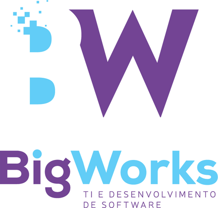

The self-hosted tool BigWorks uses to schedule and publish content on its own social media accounts. This site describes the service and how we use official platform APIs.
BigWorks Social is operated by BigWorks (Brazil). Our team prepares text and images, then schedules posts through this tool. We connect only to accounts we own, using each platform's developer APIs with user consent.
Questions about this service or our use of TikTok / Meta APIs: contato@bigworks.com.br